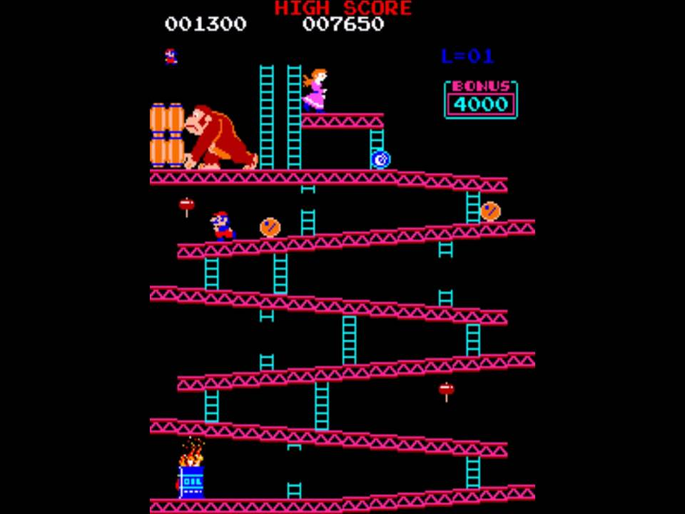
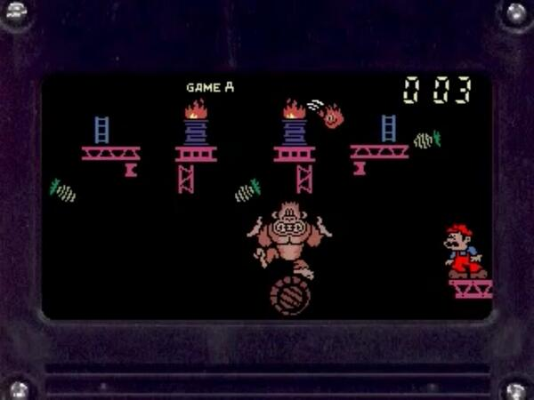
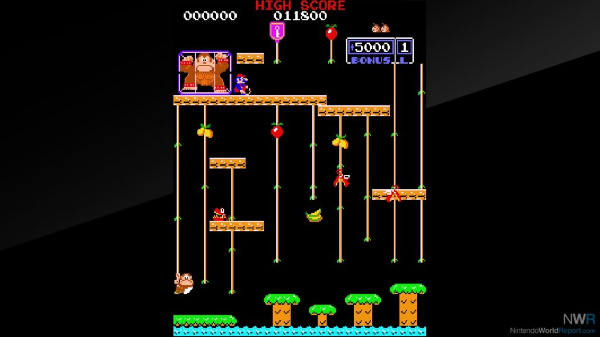
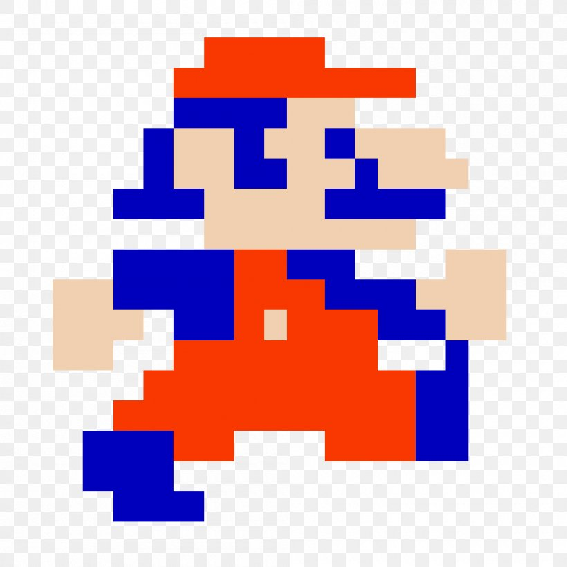
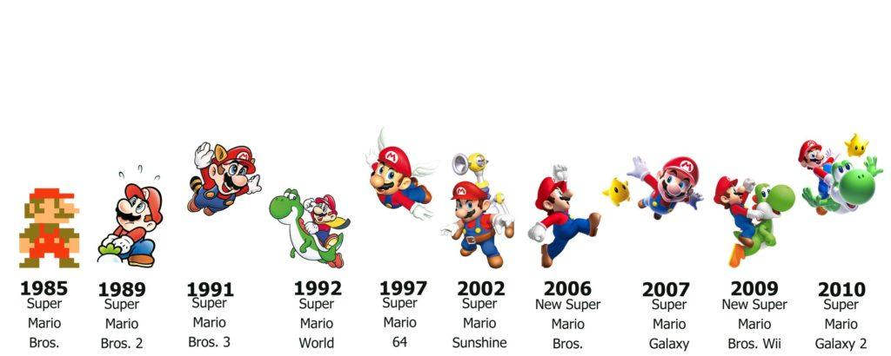

Mario'nun Bıyıkları Neden Böyle Tasarlandı?
Yukarıda gördüğünüz Mario’yu sanıyorum pek çoğunuz tanıyorsunuzdur, şapkalı, bıyıklı, mavi üzerine kırmızı giyimli bir karakter.
Peki neden bu kıyafet, şapka veya bıyık? Kısaca, bu şekilde daha kolay yaratılacaktı.

Mario ilk defa 1981 çıkışlı Donkey Kong oyununda göründü. Genç bir kızı varil fırlatan koca bir gorilden kurtarmaya çalışıyordu. Yıllar içerisinde ise 200’den fazla oyunda göründü Mario. İlk başlarda sadece bu tarz platform oyunlarında olmasına rağmen, zamanla dövüş, spor ve yarış gibi türlerdeki oyunlarda da belirdi. Hatta oyun tarihindeki en ünlü karakter olduğu da kimilerince söylenir.
Hikaye şöyle başlıyor…

Aslen bir marangoz olan Mario, bir gün sirkte Donkey Kong ve oğlu Jr. Donkey Kong’la karşılaşıyor. Donkey Kong bir varilin üzerinde dengede durmaya çalışırken bir yandan ananasları düşürmemeye çalışıyor, bunları yaparken de üzerine gelen ateşlerden kaçmaya çalışıyor. Mario çok kasıtlı olmayacak şekilde bu gorile gülüyor, ve bu Donkey Kong’u kızdırıyor. Donkey Kong, sonrasında Mario’nun kız arkadaşı olan Pauline’i kaçırıyor ve bir inşaat alanına götürüyor. Mario ise Donkey Kong’un fırlattığı variller ve ateşlerden kendini koruyarak kız arkadaşını kurtarma görevine soyunuyor. Yaklaşık 4 bölümden sonra Mario kız arkadaşını kurtarıyor ve Donkey Kong hapsediliyor.

Hikayenin devamında ise Donkey Kong’un oğlu Donkey Kong Jr., babasını hapisten kurtarmak için Mario’nun saldığı tuzaklardan ve hayvanlardan kurtularak babasını kurtarıyor ve birlikte Donkey Kong Adası’na geri dönüyorlar.
Konuya geri dönecek olursak…

Donkey Kong oyununda geliştiriciler için grafik anlamında tasarlama yapacakları alan çok kısıtlıydı, bu yüzden bütün her şey biraz düşük kapasiteye göre ayarlanmak durumunda kaldı.
Bu gördüğünüz Donkey Kong’daki Mario. Dikkat edin ağızı ya da sakalları yok.
Shigeru Miyamoto (Mario karakterinin yaratıcısı) söyleşilerinde şöyle diyor:
Mario’yu küçük bir karakter olarak tasarlamamız gerekti ama aynı zamanda insana da benzemesi gerekiyordu. Bunu başarmak için ona ayırt edici bir özellik vermemiz gerekiyordu, büyük bir burun gibi. Ağız çizmemiz gerekmesin diye ona bıyık çizmemiz gerekti. Küçük karakterlerde yüz ifadeleri göstermek zordur.
2007 CNN
Karakter tasarımlarımızda karar mercii gerçekten zamanın teknolojisiydi. Eğer Mario’yu çok saçlı yapsaydım ya animasyon yapmam gerekecekti ya da düzgün durmayacaktı. Ona bir şapka vererek bunu çözdük, hatta kaşlarını, alnını vs. de çizmemiz gerekmedi. Küçücük ekranda gerçekten işimize yarayan bir araçtı bu.
2010 USA Today
IGN’e göre, Mario’nun giyinişiyle alakalı olarak üstlük giymesi de kollarını daha belirgin etmişti. Seçilen renkler bile önemliydi, açık renkler karanlık arkaplana göre belirgin olmasını sağladı, ayrıca mavi ve kırmızının doğal kontrastı karakterin daha da belirgin olmasını sağladı.
